Cập nhật những tin tức và hoạt động mới nhất của Quỹ Trí Đức.

Mỗi ngày đến trường là một ngày vui, và niềm vui ấy đôi khi xuất bản những từ điều giản dị và thiết thực nhất. Trường THCS Phan Công Hớn là ngôi nhà chung học tập của…

Ngày 01/07/2026, Quỹ Trí Đức phối hợp cùng địa phương tổ chức Lễ khánh thành Cầu Trí Đức 8 tại tỉnh Đồng Tháp (Tiền Giang cũ). Đây là công trình cầu giao thông thứ 13 do…
Sau những ngày Lễ ấm áp, hành trình lan tỏa yêu thương lại tiếp tục được nối dài.

Có những món quà không chỉ để trao tay, mà còn để chạm đến trái tim. Khi năm cũ dần khép lại, điều đọng lại sâu sắc nhất với Quỹ Trí Đức chính là sự đồng hành, tin tưởng…
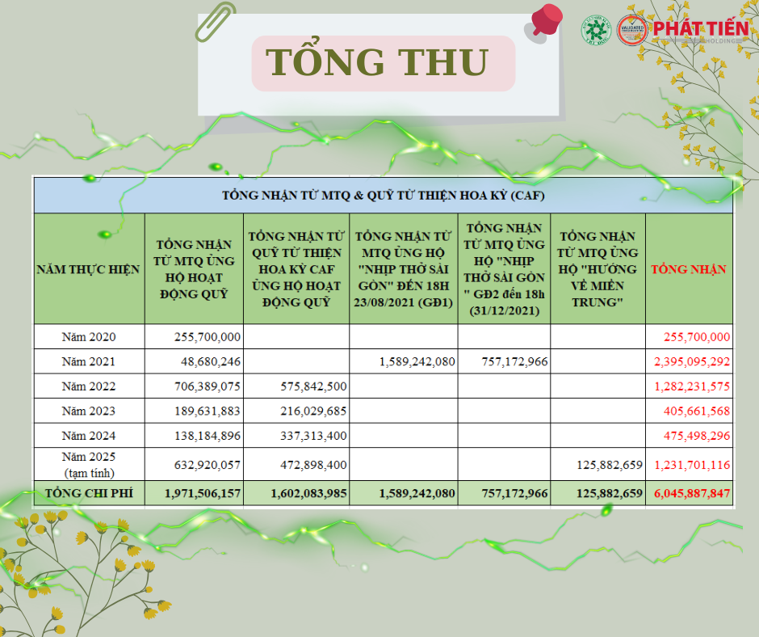
Vậy là thêm một năm nữa khép lại. Quỹ Trí Đức xin trân trọng gửi lời tri ân sâu sắc đến các Mạnh Thường Quân, các Đơn vị và cá nhân đã lặng lẽ đồng hành – những tấm lòng…

Có lẽ, giữa người với người luôn tồn tại một sợi dây gắn kết rất đặc biệt. Để rồi khi nghe thấy Miền Trung bảo lũ, trong lòng lại dấy lên cảm giác xót xa, thương cảm khó…
Sáng nay ngày 14/12/2025, giữa không khí hiền hòa của vùng quê Giao Long – nơi những rặng dừa xanh mướt, sum suê soi bóng xuống dòng sông Hàm Luông yên bình, Lễ khởi…

Như thường lệ hằng năm, Quỹ Trí Đức vinh dự đồng hành cùng các Đại lý Toyota – Phát Tiến Holding trong Chương trình Vẽ tranh “Chiếc ô tô mơ ước” – sân chơi nơi các Em…
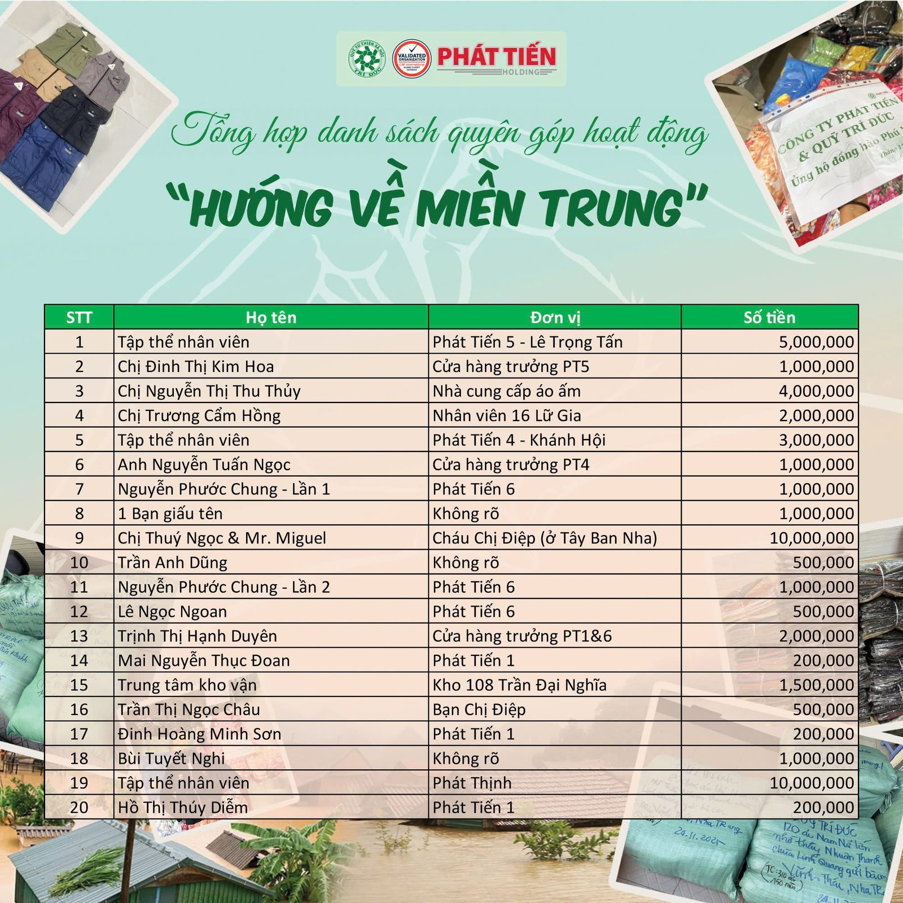
Điểm mới trong hoạt động năm nay là Chủ tịch Quỹ Trí Đức đã đến trực tiếp các Cửa hàng/Đơn vị để gặp gỡ Tân Sinh viên và Ba/ Mẹ. Thật trân quý khi các Em có thể sắp xếp…
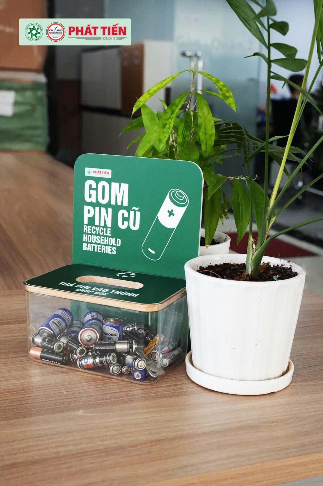
Từ tháng 10/2022, Quỹ Trí Đức đã đồng hành cùng các Đại lý/ Cửa hàng trong hoạt động THU GOM PIN CŨ – góp phần giảm thiểu rác thải độc hại và bảo vệ môi trường sống.…

Các Ba Mẹ và các Con yêu thương của Đại gia đình Phát Tiến Holding,

Nhân dịp Quốc tế Thiếu Nhi 01/06 vừa qua, Phát Tiến Holding phối hợp cùng Quỹ Trí Đức đã tổ chức một chương trình thật ấm áp và đầy ý nghĩa dành tặng cho các bé.
Ngày 17/05/2025, Quỹ Từ Thiện Xã Hội Trí Đức đã phối hợp cùng Honda Ô tô Biên Hòa tổ chức thành công Workshop Makeup Cá Nhân – một không gian nhỏ đầy ắp tình yêu thương…
Quý I/2025 khép lại với thật nhiều cảm xúc
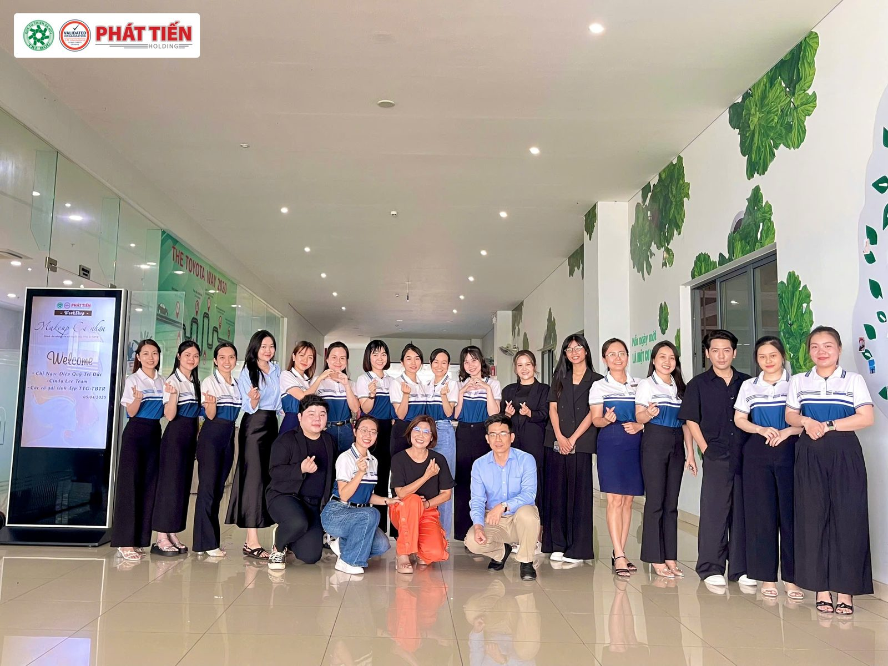
Ngày 5/4/2025, Trong không khí ấm áp và đầy năng lượng tích cực, Workshop Makeup Cá Nhân do Quỹ Từ Thiện Xã Hội Trí Đức tổ chức cho các nhân viên nữ tuyến đầu của Toyota…
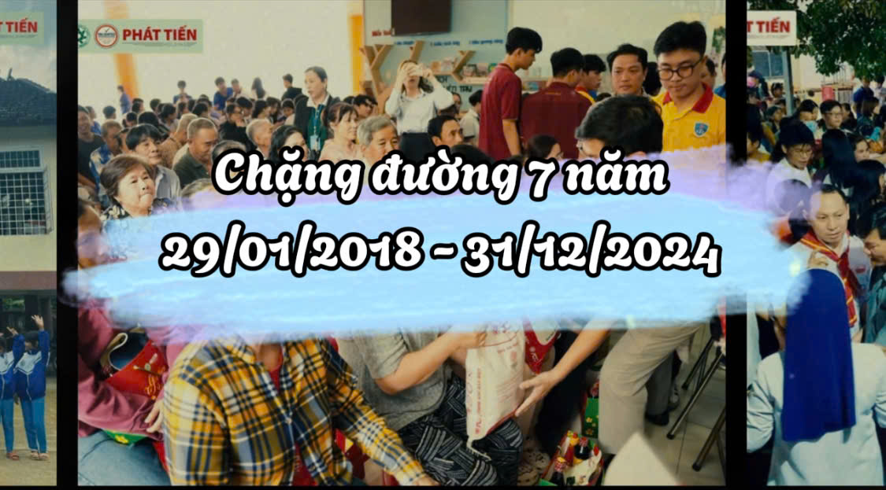
7 năm – không chỉ là hành trình của Quỹ Trí Đức mà còn là hành trình của tình yêu thương, của những tấm lòng luôn hướng về cộng đồng.
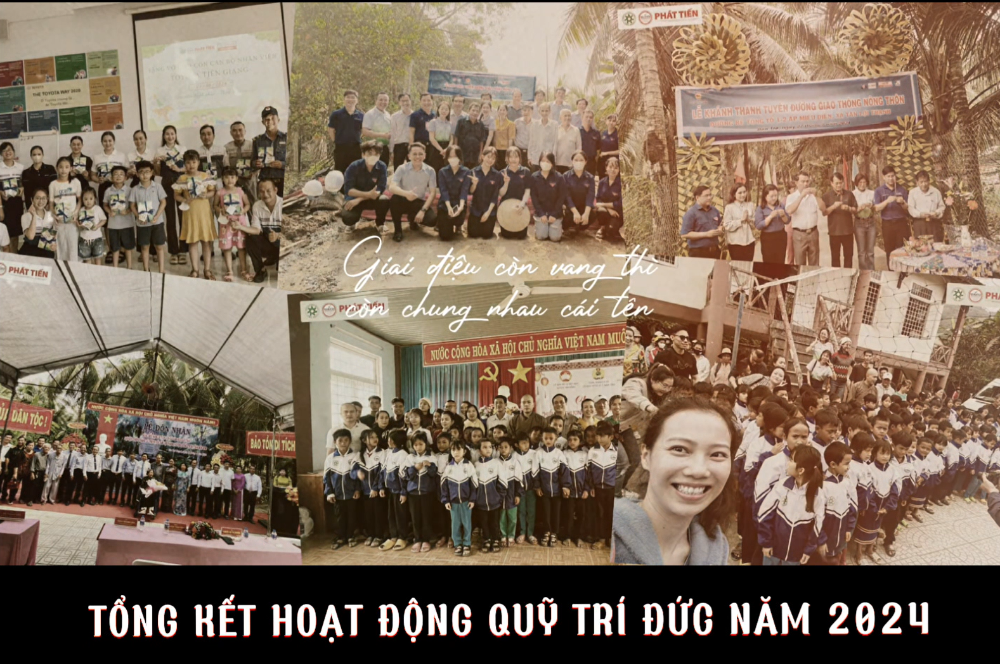
Lời đầu tiên, Quỹ Trí Đức xin gửi đến tất cả mọi người lời cảm ơn chân thành và sâu sắc nhất.
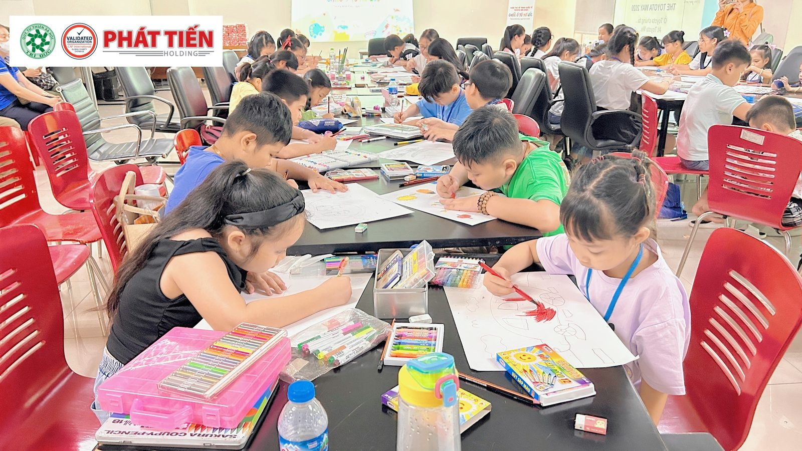
Với thời đại công nghệ, chỉ cần 1 cú nhấp chuột là có thể tạo thành 1 bức tranh. Nhưng so với việc được chứng kiến việc hoàn thiện 1 bức vẽ từ lúc phát thảo đến khi hoàn…

Trong Tháng 09/2024, Quỹ Từ Thiện Xã Hội Trí Đức đã có 1 chuyến đi đong đầy tình thương, học hỏi rất nhiều điều hay và ý nghĩa từ các thành viên thuộc Hội từ thiện Phật…
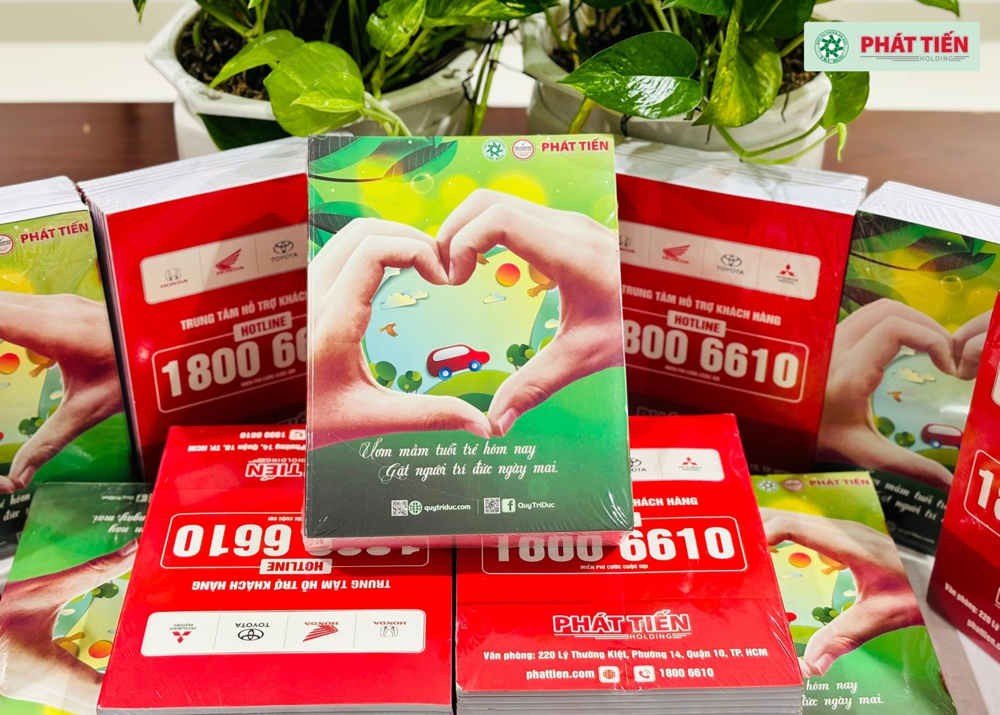
“Một năm khỏi đầu từ mùa xuân, một đời khởi đầu từ tuổi trẻ. Tuổi trẻ là mùa xuân của xã hội.”
Giồng Trôm xanh ngát những hàng dừa
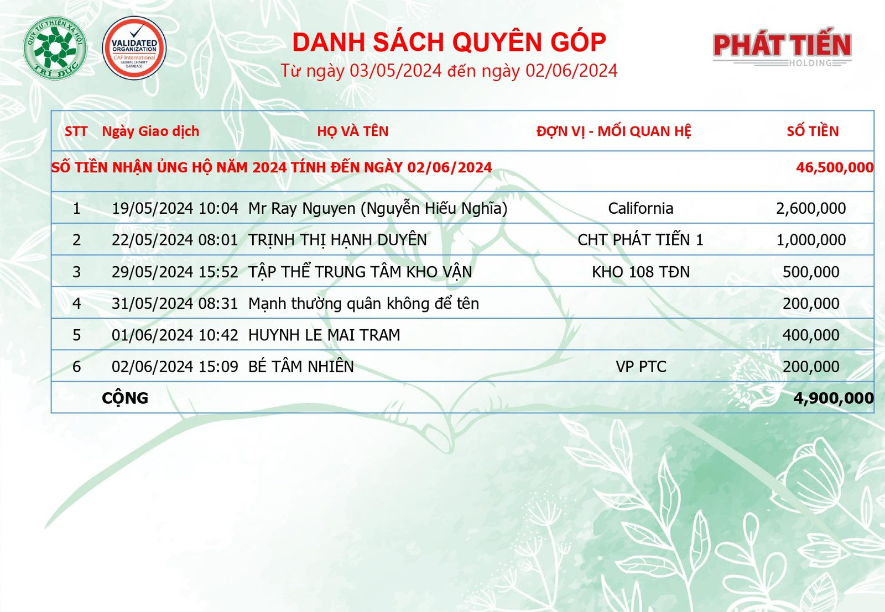
Lời nói cảm ơn chắc chắn không diễn tả hết sự cảm kích của Quỹ Trí Đức dành cho các Anh/Chị/Em mạnh thường quân đã quan tâm, đồng hành cùng Quỹ suốt thời gian qua, Quỹ…
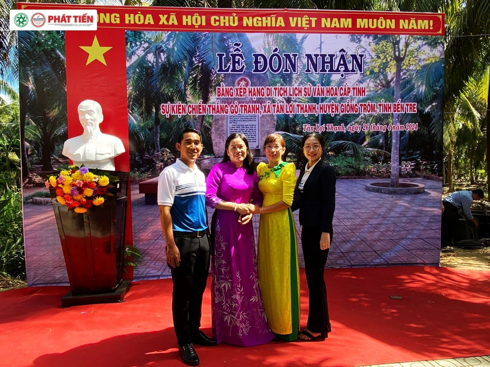
Sáng nay ngày 26/04/2024, đại diện Quỹ Trí Đức – Toyota Bến Tre đã đến dự Lễ chúc mừng Huyện Giồng Trôm đón nhận Bằng xếp hạng Di tích lịch sử văn hóa cấp Tỉnh: Sự kiện…

Trong quá trình trao Quà Tết 2024 đến với các Đại lý/ Cửa hàng/ Đơn vị, Ban Lãnh đạo PTC Holding – Quỹ Trí Đức thật vui khi món quà được Nhân viên đón nhận bằng một thái…
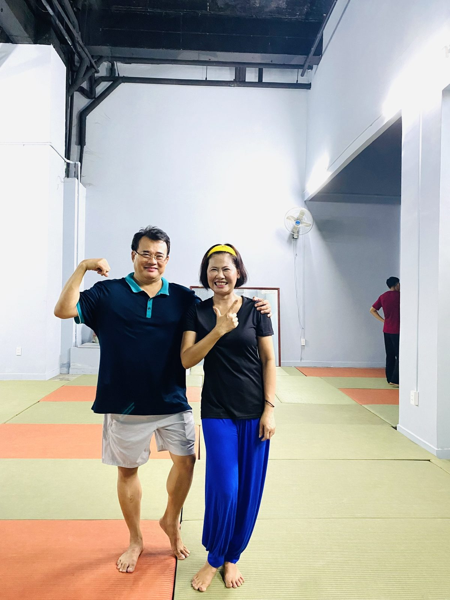
Qua nhiều cơ duyên, Anh Chị Chủ tịch Quỹ Trí Đức đã được biết đến Bộ môn THIẾU LÂM NỮNG XỊ bắc phái, môn võ lợi hại chính gốc của người Tiều. “Nững xị” (hay “bế xị”)…
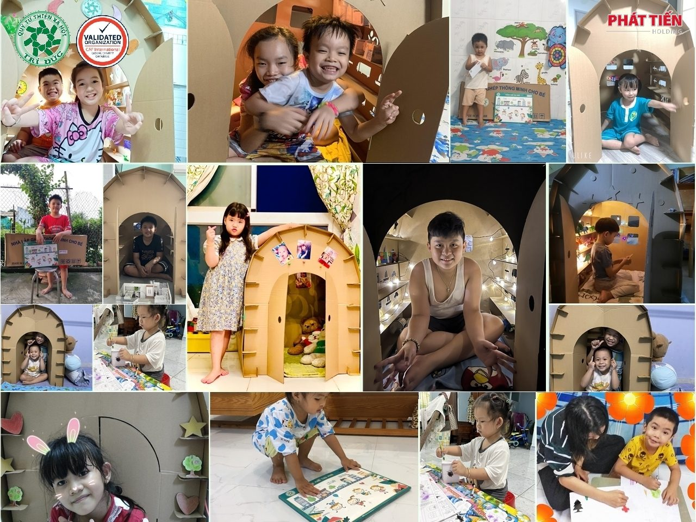
Khi những cánh phượng đỏ rực sân trường, tiếng ve kêu rộn rã báo hiệu mùa hè đã đến. Tháng 6 lại về trong niềm hân hoan đón chào một ngày mới, một ngày Tết thật đặc biệt…
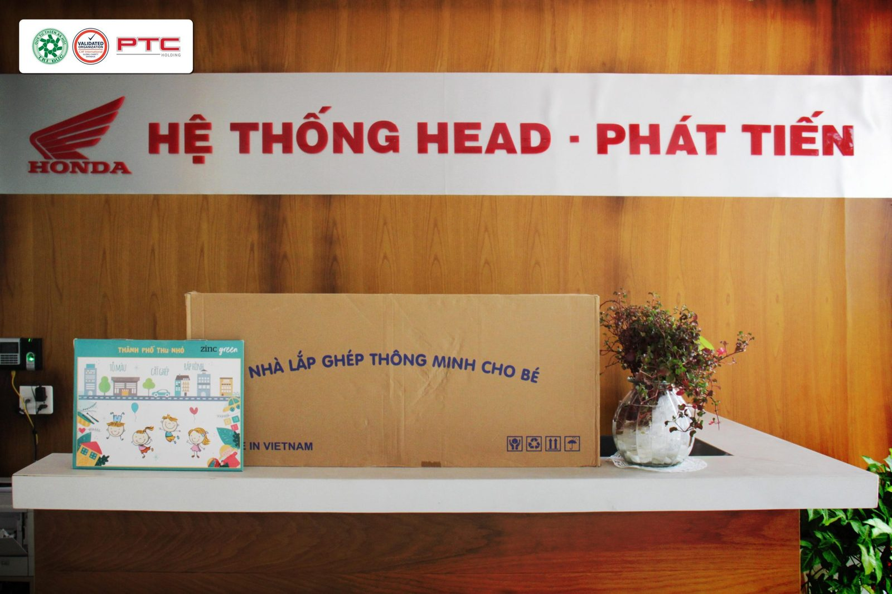
Cuộc thi có quá nhiều sự thành công vượt hơn mong đợi, BTC đã tiếp nhận gần 150 bức ảnh dự thi từ các Đơn vị và bức nào cũng dễ thương, đáng yêu, mang những màu sắc…
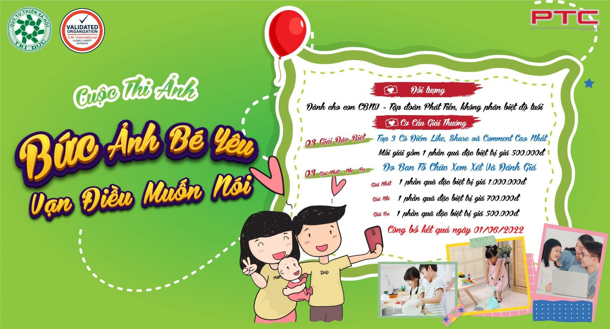
Vậy là đã gần 01 năm kể từ ngày các Bé của Đại gia đình Phát Tiến tham gia “30 NGÀY THỰC HÀNH LÒNG BIẾT ƠN & LÒNG YÊU THƯƠNG” do Quỹ Trí Đức tổ chức vào tháng…
Mùa Lễ cũng đã về, ai ai cũng khoe những hình ảnh du lịch cùng bạn bè/ gia đình nên Quỹ Trí Đức cũng xin phép “khoe” về “Kỷ niệm một chuyến đi”…
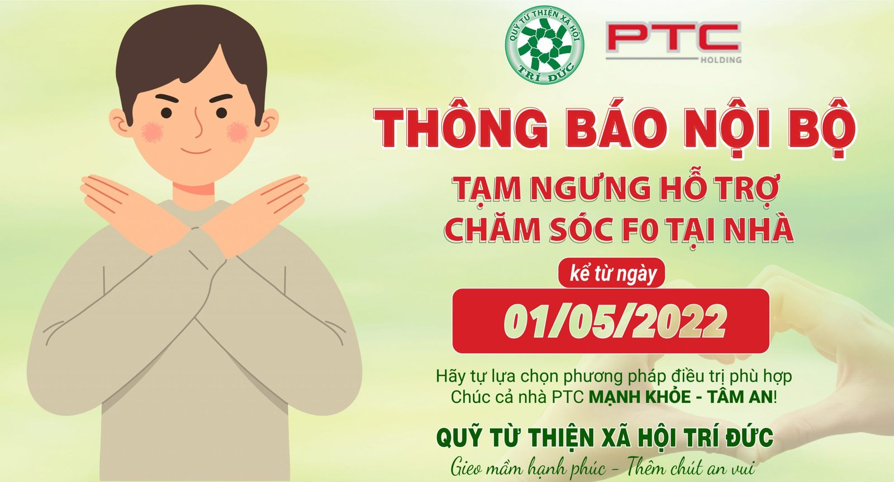
“Bình minh cũng đã trở lại”, các Bác sĩ phải trở về với những công việc riêng của mình; các bạn Tình nguyện viên cũng cần có thời gian tập trung công việc chuyên môn và…
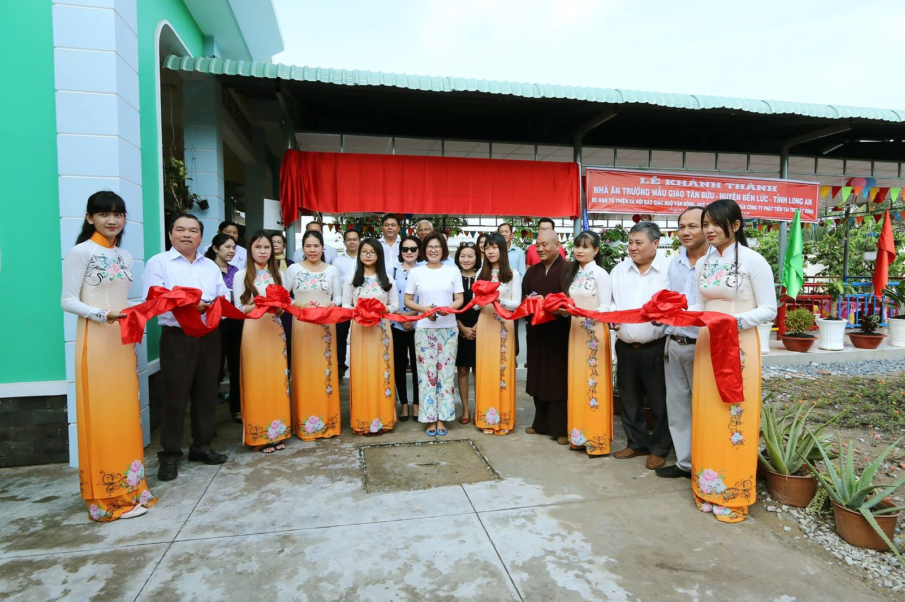
Xin chân thành cảm ơn UBND Q2, PGD Q2, UBND Huyện Bến Lức, PGD huyện Bến Lức, UBND các xã trên địa bàn Bến Lức đã hỗ trợ rất nhiệt tình cho Quỹ Phát Tiến thực hiện dự…
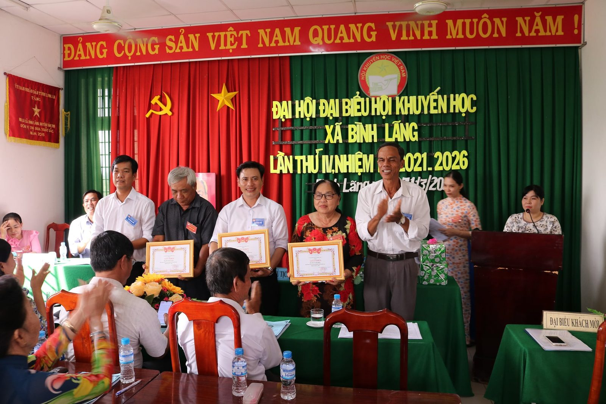
Ghi nhận những đóng góp của Quỹ Trí Đức trong công tác khuyến học của địa phương ngày 31/3/2021 vừa qua, tại Đại hội Đại biểu Hội khuyến học xã Bình Lãng lần thứ IV…
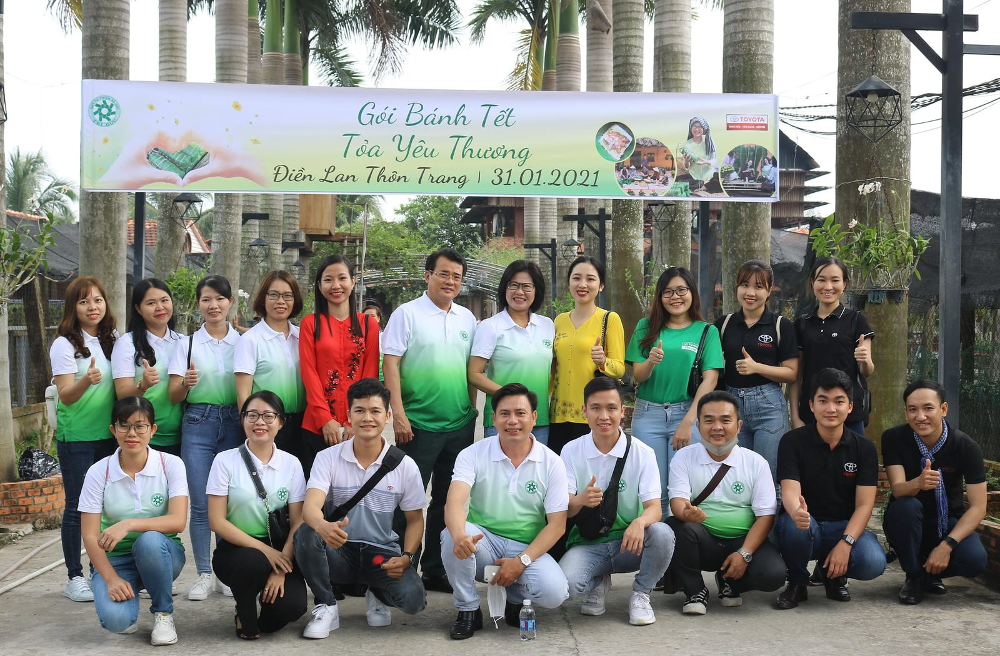
Nằm trong chuỗi hoạt động mừng Tết Nguyên Đán của Quỹ Trí Đức – chương trình GÓI BÁNH TẾT, TOẢ YÊU THƯƠNG đã được khởi động tại Tiền Giang sáng ngày 31/01/2021.
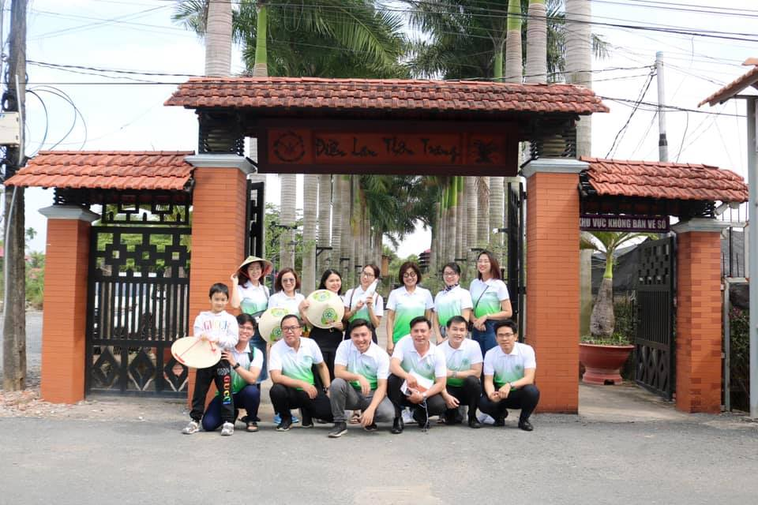
Ngày 21/01/2021 vừa qua, Ban biên tập quỹ Trí Đức đã có buổi họp mặt tại Tiền Giang. Đây chính là buổi ra mắt chính thức của các thành viên phụ trách hoạt động Quỹ tại…
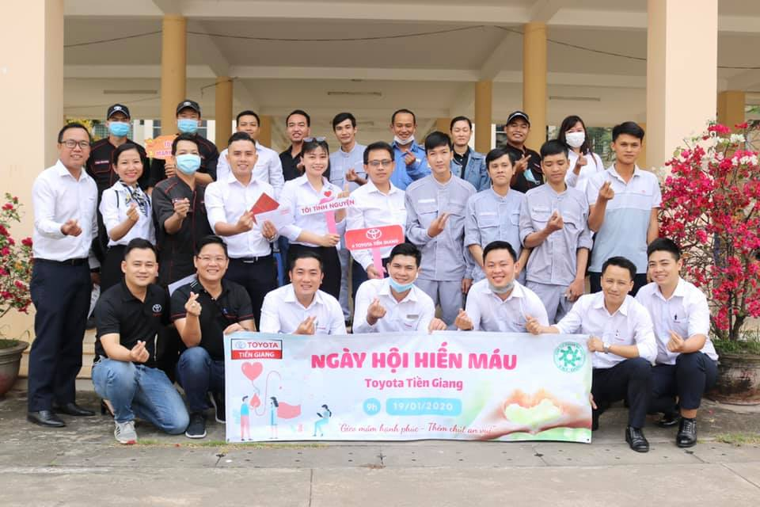
Mừng kỉ niệm 03 năm thành lập, Quỹ từ thiện xã hội Trí Đức đã phát động rất nhiều hoạt động mang lại giá trị hữu ích cho cộng đồng.
Chưa có bài viết nào thuộc lĩnh vực này.